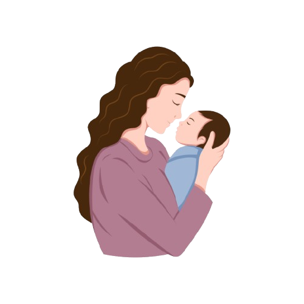

CareTrack
Maternal & Child Healthcare
Maternal & Child Healthcare
CareTrack is a web-based maternal and child healthcare platform that helps you track appointments, vaccinations, follow-ups, and clinic visits in one place.

CareTrack simplifies maternal and child healthcare by bringing all essential features together.
Track your prenatal and postnatal appointments. Get reminders for important visits.
View and manage your child's vaccination schedule and get timely reminders.
Check real-time queue status and estimated waiting time before your visit.
Get notified about upcoming appointments, overdue visits, and important follow-ups.
Manage important maternal and child healthcare activities more easily in one place.
Keep track of maternal appointments and child vaccination schedules.
Receive reminders for upcoming appointments and child vaccinations.
Check your queue position and estimated waiting time before visiting the clinic.
View your previous appointments, child vaccinations, and healthcare visits in one place.
CareTrack supports both maternal and child healthcare management through one connected platform.
Register with CareTrack to manage maternal appointments, child vaccinations, and follow-ups in one place.